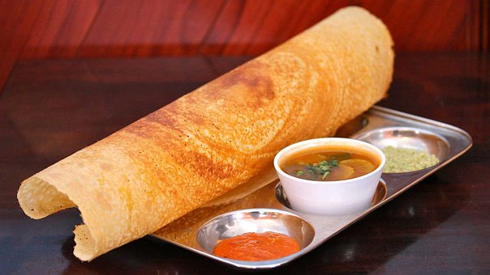

Our Service

Pizza
Pizza is a dish of Italian origin consisting of a usually round, flat base of leavened wheat-based dough topped with tomatoes, cheese, and often various other ingredients, which is then baked at a high temperature, traditionally in a wood-fired oven.

Dosa
A dosa, also called dosai, dosey, or dosha is a thin pancake in South Indian cuisine made from a fermented batter of ground black lentils and rice. Dosas are popular in South Asia as well as around the world.

Tandoori chicken
Tandoori chicken is a South Asian dish of chicken marinated in yogurt and spices and roasted in a tandoor, a cylindrical clay oven